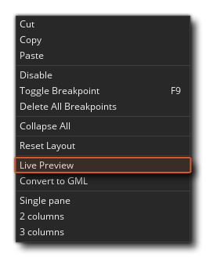
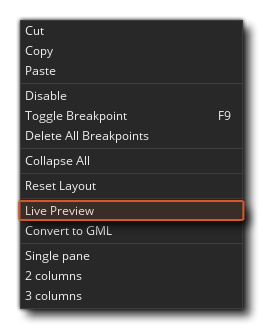
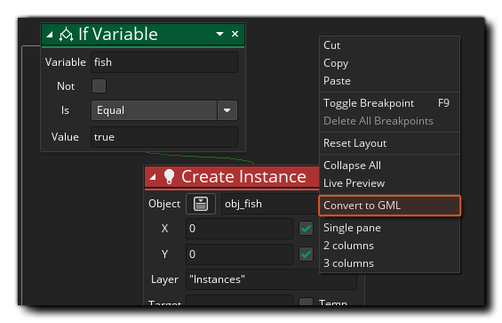
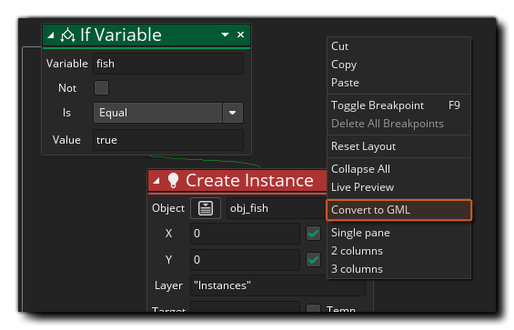
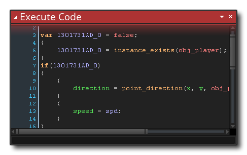

Otra característica de DnD ™ es que puedes convertirlo en código GML (lenguaje de GameMaker ), y de esta manera ver qué ocurre exactamente detrás de escena cuando usas acciones. Sin embargo, antes de cambiar realmente las acciones en GML, primero puede obtener una vista previa usando el botón derecho del mouse.  Opción de menú Vista previa en vivo: 
Opción de menú Vista previa en vivo: 
Lo cual abrirá una nueva ventana: 
A medida que agrega, cambia o elimina acciones de DnD ™, la vista previa de GML Live se actualizará para mostrarle el código real que se está creando "detrás de escena". El código en la vista previa en vivo no se puede editar directamente, pero puede seleccionar secciones y copiarlas para pegarlas en scripts GML o Acciones de código (por ejemplo).
Si decide convertir el DnD ™ en código después de ver la vista previa, puede hacerlo de nuevo haciendo clic con el botón derecho del mouse.  en cualquier caso, espacio de trabajo con acciones y seleccionando Convertir a GML. 
en cualquier caso, espacio de trabajo con acciones y seleccionando Convertir a GML. 
La primera vez que haga esto, recibirá un mensaje de advertencia que le indicará que se trata de una conversión de un solo sentido, ya que puede convertir acciones en código, pero no podrá volver a convertirlas en acciones individuales más adelante. Al hacer clic en "Aceptar" aquí, realizará la conversión por usted. 
El código resultante usará {} para delimitar acciones individuales, y usted puede ver claramente qué acciones se relacionan con qué funciones o declaraciones de variables dentro del código. Si el DnD ™ es más complejo, el código también lo será, pero se aplican las mismas reglas generales y el código será estructuras secuencialmente exactamente iguales a las que haya escrito el DnD ™. Tenga en cuenta que a veces el código tendrá variables locales adicionales (temporales) agregadas para almacenar ciertos valores que se usarán, por ejemplo esto: 
Se convertirá en este código: 
Aquí el código primero crea una variable local (temporal) y lo establece en falso, luego verifica si la instancia existe y establece la variable local a la devolución de la llamada a la función. La variable local se verifica para ver si es true o false y si es verdad, se ejecuta el resto del código.
Al aprender a programar usando Arrastrar y Soltar, esta puede ser una herramienta importante para pasar al uso de GML en una etapa posterior, ¡pero de ninguna manera es obligatorio y aún puedes hacer grandes juegos usando DnD ™! También vale la pena señalar que, si bien el proceso de conversión es de una sola vía, después de convertir acciones en código, puede volver a usar DnD ™ nuevamente utilizando el menú contextual en el editor de código y seleccionando "Convertir a DnD ™". Esto colocará el código creado previamente dentro de una acción Ejecutar código y luego podrá continuar utilizando DnD ™ como antes: 